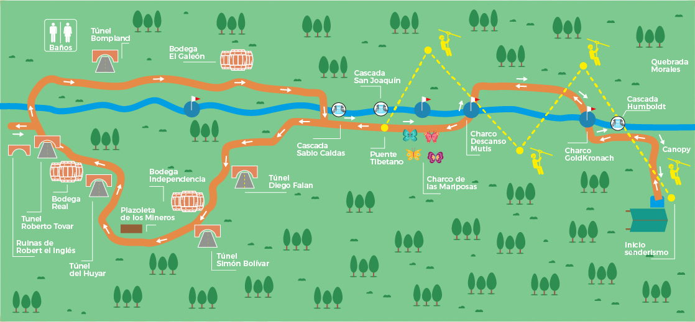

Mapa del sendero

El sendero hacia la Ciudad Perdida de Falan es una experiencia única en Colombia, que combina elementos ecológicos, históricos y arqueológicos. Este camino ha sido declarado patrimonio histórico del Tolima debido a la importancia cultural de las Ruinas de las Reales Minas de Santa Ana. El recorrido incluye la orilla de un río con cascadas y charcos, tres túneles históricos y finalmente, las ruinas de la ciudad perdida, todo dentro de un entorno natural preservado en línea con los principios de ecoturismo y sostenibilidad de la Fundación Ecoturística Santa Ana.
5
Tirolesas
40 mts
Altura del torrentismo
1200 mts
Distancia del canopy
Cascada Humboldt
Primera cascada del sendero que conduce a la Ciudad Perdida, visitada por el científico alemán, Padre de la Geografía Moderna, Alejandro Von Humboldt en 1.801, cuando estaba realizando su expedición en el Nuevo Reino de Granada.
Cascada Sabio Caldas
En esta cascada el Sabio Francisco José de Caldas encontró importantes especies de flora tropical cuando estuvo acompañando a Mutis en los recorridos de la Expedición Botánica.
Túnel Roberto Tovar
Es el túnel que probablemente conducía hasta Mariquita. Se le dio el nombre del reportero colombiano que en 1987 descubrió las Ruinas de las Reales Minas de Santa Ana, que se conocen actualmente como CIUDAD PERDIDA DE FALAN.
Bodega de la Independencia
En 1824 el General Simón Bolívar le entregó en concesión estas minas a los ingleses, en reconocimiento a la ayuda militar y financiera que Inglaterra le prestó para sacar adelante la Campaña Libertadora con la cual Colombia logró la indecencia del yugo español.
Túnel Santa Ana
Túnel de extracción de oro y plata al cual se le dio el nombre de la virgen patronal de Falan, recordando la historia de los primeros poblados fundados por los españoles. En el año 1.749 el Rosario de las Lajas y a finales del Siglo XVIII Santa Ana en donde se encuentra hoy la Ciudad Perdida. Este pueblo se incendió y fue trasladado a donde actualmente se ubica la población de Falan.
Bodega el Galeón
Lugar donde se guardaba el oro y la plata que luego era conducida por túneles hasta Mariquita y luego se embarcaba, desde el puerto de Honda, hacía España. Parte del tesoro hundido en el mar Caribe, en el Galeón San José, provenía de las Reales Minas de Santa Ana.
Bodega Real
Estructura en piedra laja construida por los españoles para almacenar el oro y la plata que era de propiedad del rey de España. El mayor auge de esta ciudadela minera se dio bajo el imperio del Rey Carlos III.
Túnel Diego Fallon (Falan)
Fallón, apellido irlandés que se lee Falan. Este túnel lleva el nombre del hijo más ilustre que ha tenido el Municipio de Falan. Diego Fallón fue uno de los poetas más importantes del romanticismo en Colombia, hijo de Thomas Fallón, ingeniero irlandés que llegó con los ingleses a trabajar en esta ciudadela minera a comienzos del Siglo XIX. Diego Fallón es el tatarabuelo del ex-presidente colombiano Ernesto Samper Pizano
Descanso de Mutis
Charco de aguas cristalinas de la Quebrada Morales, con una especie de jacuzzi natural en la parte alta, en donde el sabio José Celestino Mutis, solía descansar. Mutis administró las minas durante 10 años por orden del Rey Carlos III, antes de que se le encomendara la dirección de la Expedición Botánica.
Túnel Bonpland
Aimé Bonpland, científico francés, médico, botánico y naturalista, acompañó a Humbolt en la expedición por América y en 1.801 visitó las Reales Minas de Santa Ana.
Túnel del Huyar
Túnel construido bajo la administración de Juan José del Huyar, químico español, quien descubrió junto con su hermano Fausto, el walframio, elemento número 74 de la Tabla Química, también llamado tungsteno. Este científico fue enviado por el Rey Carlos III para mejorar los procesos metalúrgicos.
Ruinas Robert El Inglés
Roberth Stephenson fue el primer director que tuvo las minas de Santa Ana cuando Simón Bolívar las entregó a los ingleses en 1824. Stepheson fue un prestigioso ingeniero civil y junto con su padre George Stepheson inventaron la locomotarora a vapor y construyeron el primer ferrocarril en el mundo en Leverpool Inglaterrra.
Cascada San Joaquín
Esta cascada la bautizaron los españoles con el nombre del esposo de la virgen Santa Ana. Desde este sitio los mineros tomaban el agua que conducían por un canal o nivel para el lavado de los minerales en la Ciudad Perdida.
Túnel Simón Bolívar
Túnel vertical de más de 90 metros de profundidad por donde descendió el el Libertador Simón Bolívar, en el año 1830, con el fin de conocer en detalle las minas que le había entregado en concesión a los ingleses en 1824.